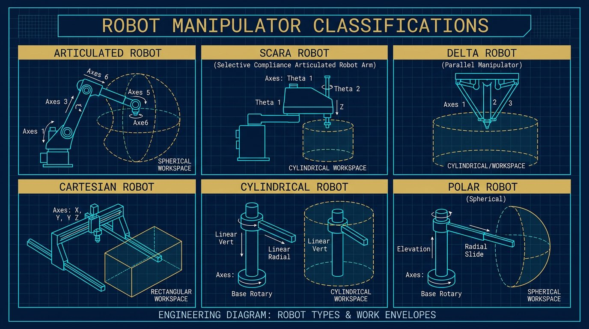

Every robot arm on a factory floor is built around one of a small number of kinematic structures — the arrangement of joints and links that determines its workspace shape, speed, payload and precision. Picking the wrong structure for a task is one of the most common and most expensive automation mistakes: an arm that is technically capable of a job can still be the wrong tool if its workspace geometry, speed profile or footprint fight the application.

This guide walks through the six configurations that cover almost every robotic arm you will encounter — articulated, SCARA, delta, Cartesian, cylindrical and polar — and gives a practical framework for narrowing down which one belongs in your process.
Quick comparison: workspace shape at a glance
Before the detail, here is the shape each configuration traces through space. Workspace geometry is the single most useful filter when narrowing down a robot type, because it tells you immediately whether the arm can physically reach the points your process needs.
Articulated
Spherical envelope, 4–6+ rotary joints
SCARA
Cylindrical envelope, rigid Z-axis
Delta
Shallow dome, parallel links
Cartesian
Rectangular envelope, linear rails
Cylindrical
Cylindrical wedge, rotary + linear
Polar
Spherical wedge, pivoting base
| Type | Workspace | Typical payload | Relative speed | Best for |
|---|---|---|---|---|
| Articulated | Spherical | ~3 kg to 800+ kg | Medium–high | Welding, machine tending, palletizing, general handling |
| SCARA | Cylindrical | ~1–20 kg | High | Electronics assembly, dispensing, fast pick-and-place |
| Delta | Shallow dome | ~0.1–8 kg | Very high | Food/pharma/cosmetics high-speed picking |
| Cartesian / gantry | Rectangular | Light to very heavy | Medium | Long-travel CNC loading, 3D printing, palletizing gantries |
| Cylindrical | Cylindrical wedge | ~10–150 kg | Medium | Compact machine tending, rotary fixture loading |
| Polar / spherical | Spherical wedge | Varies by model | Medium | Legacy heavy handling; often superseded by articulated arms |
Articulated (revolute) arms
Articulated arms use a chain of rotary joints — most commonly six — mounted on a fixed or mobile base, mimicking a human shoulder-elbow-wrist arrangement. Because every joint rotates, the reachable workspace approximates a sphere, which is why articulated arms handle the widest range of orientations and part geometries of any configuration. This is the arm type most people picture when they hear "industrial robot," and it is the structure behind the compact FANUC LR Mate reviewed on this site, the mid-size KUKA KR 20 R1810, and heavier-duty collaborative arms like the Universal Robots UR20.
The tradeoff for that flexibility is programming complexity and, at the joint level, lower stiffness than a Cartesian structure at equivalent reach — every additional degree of freedom is another source of compliance and calibration error. For the full math behind positioning an articulated wrist at a target pose, see our inverse kinematics guide.
- Pros: Maximum orientation freedom; broad application coverage; excellent around-obstacle reach.
- Cons: More complex programming; larger safety envelope for the same reach; higher cost at heavy payloads.
- Typical uses: Welding, tending, painting, palletizing, deburring.
SCARA arms
SCARA stands for Selective Compliance Assembly Robot Arm. The structure has two parallel rotary joints that move in a horizontal plane, plus a rigid vertical (Z) axis for insertion or lifting. That "selective compliance" — flexible in X-Y, rigid in Z — is exactly what high-speed vertical insertion tasks like pin placement or PCB assembly need, and it is why SCARA robots dominate electronics manufacturing.
Because the arm's mass stays largely in a horizontal plane and the structure is mechanically simpler than a 6-axis arm, SCARA robots achieve higher cycle rates than articulated arms at comparable payloads, at the cost of a smaller working envelope and no ability to approach a part from an arbitrary angle.
- Pros: Very fast cycles; excellent vertical insertion; compact footprint.
- Cons: Limited orientation control; cylindrical workspace only.
- Typical uses: Electronics assembly, screwdriving, dispensing, light pick-and-place.
Delta / parallel arms
Delta robots hang three (occasionally four) parallel arms from a fixed overhead frame down to a common end-effector platform. Because the motors stay mounted on the frame instead of traveling with the arm, the moving mass is very low — which is the entire reason delta robots hold the speed record among industrial arm types. Their tradeoff is a shallow, dome-shaped workspace and light payload ceiling, which is why they are almost exclusively used for high-speed, low-payload picking on conveyor lines: food packaging, pharmaceutical blister packs, small-parts sorting.
- Pros: Highest speeds; low moving mass; excellent for tracking conveyors.
- Cons: Limited payload; shallow workspace; overhead mounting required.
- Typical uses: Primary packaging, sorting, small-part kitting.
Cartesian / gantry robots
Cartesian robots move along three linear, mutually perpendicular axes (X, Y, Z) instead of rotating joints. That linear-only motion makes them mechanically simple, highly rigid, and straightforward to program — moving in a straight line is the native motion, not an interpolated one. Gantry-style Cartesian systems can also scale to very large working volumes simply by lengthening the rails, which is why they show up in large-format 3D printing, CNC machine loading and warehouse-scale palletizing where an articulated arm's reach would be the limiting factor.
The cost of that rigidity is a rectangular workspace that wastes floor space relative to a sphere, and no ability to change tool orientation without adding a rotary wrist module.
- Pros: High rigidity; simple control; easily scalable working volume.
- Cons: Larger footprint; needs additional axes for wrist orientation.
- Typical uses: CNC loading, 3D printing, long-stroke handling, gantry palletizers.
Cylindrical arms
Cylindrical robots combine one rotary joint at the base with linear joints for radial and vertical motion, tracing a cylindrical (or wedge-shaped) workspace. They occupy a middle ground between Cartesian rigidity and articulated flexibility: compact, mechanically simple, and well suited to loading a rotary fixture or a small machine cell from a fixed station, but with limited orientation control at the tool.
- Pros: Compact; simple kinematics; good for fixed-station tasks.
- Cons: Limited wrist DOF; constrained workspace wedge.
- Typical uses: Rotary fixture loading, compact tending cells.
Polar (spherical) arms
Polar arms use two rotary joints plus one linear joint to sweep a spherical-wedge workspace — historically one of the earliest industrial robot layouts, used for heavy handling and early die-casting and forging cells. Most new deployments today use an articulated arm instead, which delivers a comparable or larger workspace with more orientation freedom for a similar footprint, so polar robots are now mostly found in legacy installations rather than new specifications.
- Pros: Spherical reach from a compact base; good legacy heavy handling.
- Cons: Less flexible than articulated; limited availability in new models.
- Typical uses: Legacy heavy-duty cells, specialized replacements.
Where collaborative robots (cobots) fit in
"Cobot" describes a safety behavior, not a seventh kinematic type. Most collaborative robots are built on an articulated or SCARA structure and become collaborative through power-and-force limiting, rounded surfaces and safety-rated monitoring that allows them to share space with people without a fence, under a proper risk assessment. For a full comparison of collaborative arms by brand, payload and price, see our collaborative robot arm buying guide.
How to choose: a decision framework
| If your priority is… | Start with |
|---|---|
| Maximum flexibility, varied part orientations | Articulated (6-axis) |
| Fastest possible cycle time on light parts | Delta or SCARA |
| High-speed vertical insertion (electronics) | SCARA |
| Long, straight-line travel or very large payload | Cartesian / gantry |
| Compact footprint feeding a single fixed station | Cylindrical |
| Sharing space with operators, no fencing | Collaborative articulated or SCARA |
- Map points and approaches: all pick/place poses, approach angles and Z heights.
- Match workspace: spherical vs cylindrical vs rectangular vs dome.
- Filter by speed/payload: delta/SCARA for light and fast; Cartesian/articulated for heavy or long travel.
- Check orientation needs: if you need arbitrary wrist angles, prefer articulated.
- Validate cell footprint and guarding: include safety zones and maintenance access.
- Build a shortlist and model ROI: use our payload calculator and ROI calculator.
Common selection mistakes
- Sizing from payload alone. Two arms with the same rated payload can have very different usable workspaces and wrist inertia limits.
- Ignoring wrist orientation needs. A Cartesian or SCARA arm that cannot rotate a tool to the angle your process needs will fail regardless of its precision.
- Underestimating floor space for a spherical workspace. An articulated arm's sphere often needs more clear floor area than its reach number suggests once safety zones are added.
- Assuming "cobot" means "any configuration is fine." Collaborative behavior is a safety layer on top of a structure — verify the underlying kinematics still fit the task.
Frequently asked questions
What are the 6 main types of robotic arms?
Articulated, SCARA, delta, Cartesian, cylindrical and polar. Each is defined by its joint arrangement and the resulting workspace shape rather than by brand or industry.
What type of robot arm is fastest?
Delta robots generally lead on speed for light payloads because their motors stay off the moving structure. SCARA arms are the next fastest for planar assembly work.
Which robot arm type is most common in industry?
Six-axis articulated arms, because their spherical workspace and multi-axis wrist cover the broadest range of tasks from welding to palletizing.
Is a cobot a different type of robotic arm?
Not structurally. Most cobots use an articulated or SCARA kinematic structure; power-and-force limiting and safety monitoring is what makes them collaborative.
SCARA vs articulated: which should I choose?
SCARA for fast planar assembly and vertical insertions with light payloads. Articulated for arbitrary tool orientations, obstacle avoidance, and complex approach angles.
Are polar and cylindrical robots still relevant?
Cylindrical robots can be great in compact tending cells and rotary fixtures. Polar robots are mostly legacy; articulated arms usually replace them in new specs.
Glossary
- Workspace (envelope): The 3D region the tool can reach.
- DOF (Degrees of Freedom): The number of independent joint motions.
- Parallel robot: A mechanism where multiple kinematic chains support a common platform (e.g., delta).
- PFL (Power-and-Force Limiting): Collaborative safety design that limits energy in human contact.
Continue reading: the 6-DOF Robot Arm Master Guide
Review robot architecture, programming, calibration and application fundamentals.
Read the full guide →About the author
Robotics Engineering publishes practical, vendor-neutral guidance on robot arms, ROS 2 and industrial automation. This article is maintained by our editorial engineering team and updated as standards and best practices evolve.